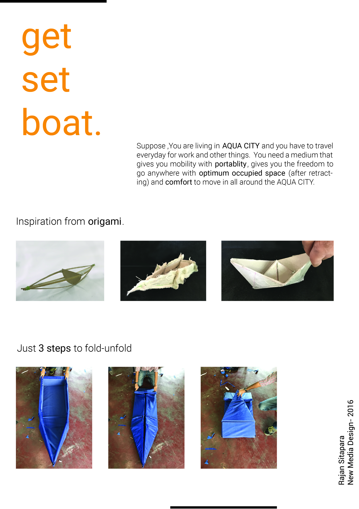

Due to the Globle Warming, ice is melting. Sea level is also rising. It is a prototype of futuristic boat which is colapsible for youth of Sunk Mumbai in 2089. After retraction, this boat can be worn as a bagpack.

Water level has start to increase. In future, there will be possiblity that the important cities of world which are at the sea cost might stat to sink. There will be water all around city (max. 9-10 inches deep). What will be the futuristic transportation medium for that??
This was a imaginary condition we had given to solve in open elective subject 'Aqua City', conducted by Tamar Akov. Tamar Akov is an industrial designer specializing in sustainable design. Under her guidence, I made this design.
My age group was 18-25 year youth who want easily collispible and quick open transportation medium. My target city was mumbai. So, I optimized size after retraction as much as possible. I took help of origami to get out and get through this project in really short time with full scale model.